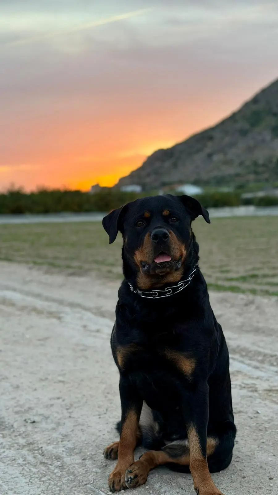

El Rottweiler no es solo un perro — es el resultado de más de 2.000 años de historia, trabajo y selección. Conocer sus orígenes te ayuda a entender por qué es como es: por qué es tan leal, por qué necesita trabajar, y por qué su mala fama no tiene ningún fundamento real.
La línea del tiempo del Rottweiler
El origen: los perros de las legiones
Las legiones romanas que conquistaban Europa necesitaban alimentar a miles de soldados. Para ello llevaban consigo enormes rebaños de ganado — y perros fuertes y resistentes para cuidarlos durante las marchas. Estos perros, descendientes del moloso romano, eran la base de lo que hoy conocemos como Rottweiler.
Nace la raza en "Das Rote Wil"
Al llegar al sur de Alemania, los perros romanos se cruzaron con razas autóctonas de la región. En la ciudad que los romanos llamaron Arae Flaviae — y que con el tiempo se llamaría Rottweil ("villa roja" por sus tejados de terracota) — estos cruces dieron lugar al perro que hoy conocemos. El Rottweiler lleva el nombre de esta ciudad.
El perro carnicero de Rottweil
Rottweil se convirtió en un importante centro ganadero y comercial. Los carniceros de la ciudad usaban al Rottweiler para dos tareas: conducir el ganado al mercado y transportar el dinero de las ventas — literalmente colgaban las bolsas con monedas del cuello del perro, que era prácticamente intocable para los ladrones. De ahí su apodo: "Rottweiler Metzgerhund" (perro carnicero de Rottweil).
Al borde de la extinción
La llegada del ferrocarril cambió todo. Ya no era necesario conducir el ganado por las carreteras durante días — los trenes lo transportaban en horas. El Rottweiler perdió su función principal y la raza estuvo a punto de desaparecer. En 1882 solo se registró un ejemplar en un concurso canino en Heilbronn.
El renacimiento: perro policial y de trabajo
A principios del siglo XX, la policía alemana descubrió las extraordinarias capacidades del Rottweiler: inteligente, obediente, físicamente poderoso y con un gran sentido del olfato. En 1910 fue reconocido oficialmente como perro policial. En 1907 se fundó el primer club de la raza (DRK) y en 1921 se creó el ADRK, el club oficial que sigue existiendo hoy.
Reconocimiento internacional
El American Kennel Club (AKC) reconoció oficialmente al Rottweiler en 1931. La Federación Cinológica Internacional (FCI) lo clasificó dentro del grupo 2, sección 2: perros tipo Pinscher y Schnauzer, Molosoides y perros de montaña y boyeros suizos.
Del trabajo al corazón de la familia
El Rottweiler moderno sigue trabajando en policía, rescate, rastreo y ejército en todo el mundo. Pero la mayoría vive como lo que realmente es: un perro de familia extraordinario, leal hasta el extremo, que protege a los suyos con la misma dedicación con la que sus antepasados cuidaban los rebaños de las legiones romanas.

Por qué el Rottweiler es como es
Su historia explica todo sobre su carácter. Miles de años seleccionando perros que trabajaran codo a codo con humanos — que obedecieran, que protegieran, que fueran leales — han dado como resultado un perro con una inteligencia y lealtad extraordinarias.
Su fama de "peligroso" no viene de su naturaleza, sino del mal uso que algunos humanos han hecho de su capacidad de protección. Un Rottweiler bien educado y socializado es exactamente lo que la historia dice que es: un compañero de trabajo y de vida incomparable.
💡 Maya es la demostración viviente de que la historia del Rottweiler es una historia de lealtad, trabajo y amor — no de peligro. 2.000 años de perro extraordinario no se pueden borrar con unos pocos titulares. 🐾